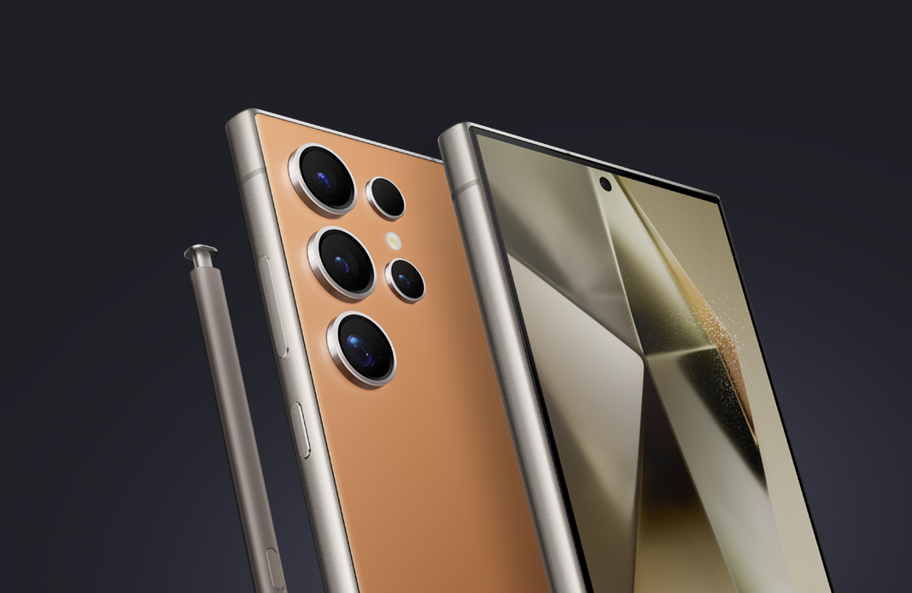

With getting phones you'll need to know what operating system you'll need so far there are 2 choices with 1 being deprecated (Microsoft Windows phone) The 2 main ones as of 2026 are Android and IOS (Apple). Android was made public in 2008 and they focused on camera development whilst the IOS was made in 2007 which was called IOS 1
With the buttons below
How we can help - We'll help you find your phone thats got the good specifications and statistics, from Samsung to Apple devices we have a selection of devices to compare. We also have compatible accessories to go with your device or devices.